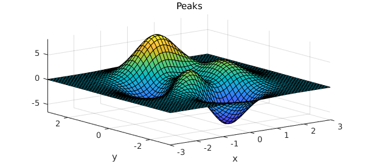
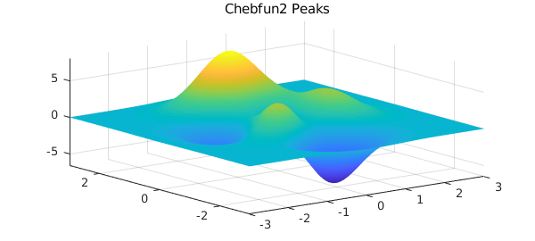
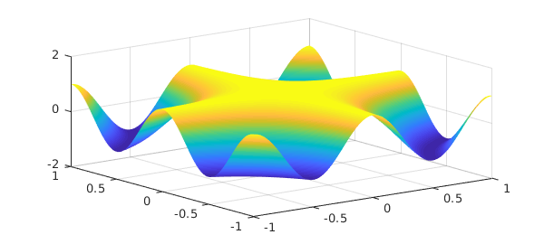
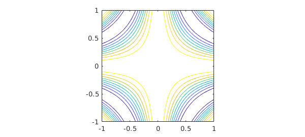
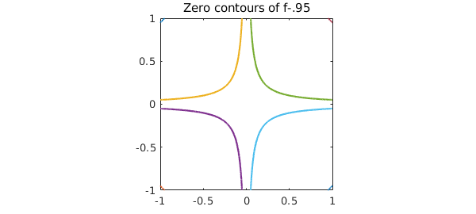
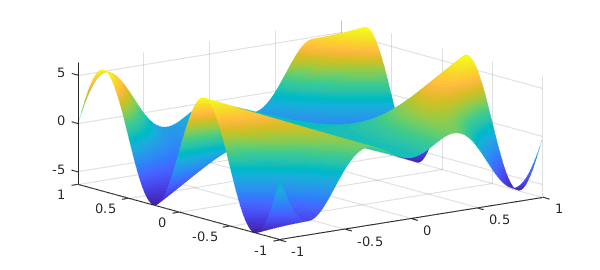
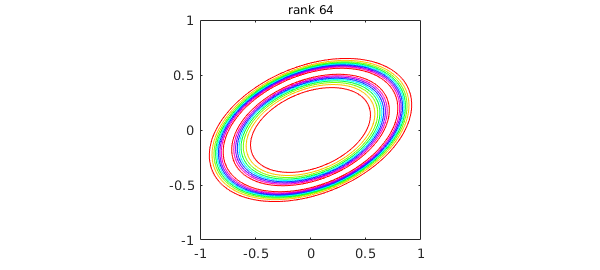

12.1 What is a chebfun2?
Chebfun2 is the part of Chebfun that deals with functions of two variables defined on a rectangle $[a,b]\times[c,d]$. Just like Chebfun in 1D, it is an extremely convenient tool for all kinds of computations including algebraic manipulation, optimization, integration, and rootfinding. It also extends to vector-valued functions of two variables, so that one can perform vector calculus.
For example, here is a test function that has been part of MATLAB for many years. MATLAB represents the "peaks" function by a $49\times 49$ matrix:
peaks
z = 3*(1-x).^2.*exp(-(x.^2) - (y+1).^2) ... - 10*(x/5 - x.^3 - y.^5).*exp(-x.^2-y.^2) ... - 1/3*exp(-(x+1).^2 - y.^2)

The same function is available as a chebfun2 in the Chebfun2 gallery:
f = cheb.gallery2('peaks');
plot(f), axis tight, title('Chebfun2 Peaks')

Of course in Chebfun we can do all sorts of things with functions to high accuracy, such as evaluate them
f(0.5,0.5)
ans = 0.375375578848318
or compute their maxima,
max2(f)
ans = 8.106213589442334
A chebfun2, with a lower-case "c", is a MATLAB object, the 2D analogue of a chebfun. The syntax for chebfun2 objects is similar to the syntax for matrices in MATLAB, and Chebfun2 objects have many MATLAB commands overloaded. For instance, trace(A) returns the sum of the diagonal entries of a matrix $A$ and trace(f) returns the integral of $f(x,x)$ when $f$ is a chebfun2.
Chebfun2 builds on Chebfun's univariate representations and algorithms. Algorithmic details are given in [Townsend & Trefethen 2013b] and mathematical underpinnings in [Townsend & Trefethen 2014]. For more information, see Section 12.8.
12.2 What is a chebfun2v?
Chebfun2 can represent scalar-valued functions, such as $\exp(x+y)$, and vector-valued functions, such as $[\exp(x+y);\cos(x-y)]$. A vector-valued function is called a chebfun2v, and chebfun2v objects are useful for computations of vector calculus. For information about chebfun2v objects and vector calculus, see Chapters 15 and 16 of this guide.
12.3 Constructing chebfun2 objects
A chebfun2 is constructed by supplying the Chebfun2 constructor with a function handle or string. The default rectangular domain is $[-1,1]\times [-1,1]$. (An example showing how to specify a different domain is given at the end of this chapter.) For example, here we construct and plot a chebfun2 representing $\cos(2\pi xy)$ on $[-1,1]\times[-1,1]$.
f = chebfun2(@(x,y) cos(2*pi*x.*y)); plot(f), zlim([-2 2])

There are several commands for plotting a chebfun2, including plot, contour, and surf. Here is a contour plot of $f$:
contour(f), axis square

One way to find the rank of the approximant used to represent $f$, discussed in Section 8.8, is like this:
length(f)
ans =
11
Alternatively, more information can be given by displaying the chebfun2 object:
f
f =
chebfun2 object: (1 smooth surface)
domain rank corner values
[ -1, 1] x [ -1, 1] 11 [ 1 1 1 1]
vertical scale = 1
The corner values are the values of the chebfun2 at $(-1,-1)$, $(-1,1)$, $(1,-1)$, and $(1,1)$, in that order. The vertical scale is used by operations to aim for close to machine precision relative to that number.
12.4 Basic operations
Once we have a chebfun2, we can compute quantities such as its definite double integral:
sum2(f)
ans = 0.902823333580281
This matches well the exact answer obtained by calculus, which is $(2/\pi)\hbox{Si}(2\pi)$:
exact = 0.9028233335802806267957003779
exact = 0.902823333580281
We can also evaluate a chebfun2 at a point $(x,y)$, or along a line. When evaluating along a line a chebfun is returned because the answer is a function of one variable.
Evaluation at a point:
x = 2*rand - 1; y = 2*rand - 1; f(x,y)
ans = -0.507059801016062
Evaluation along the line $y = \pi/6$:
f(:,pi/6)
ans =
chebfun row (1 smooth piece)
interval length endpoint values
[ -1, 1] 21 -0.99 -0.99
Epslevel = 1.776357e-15. Vscale = 1.000000e+00.
There are plenty of other questions that may be of interest. For instance, what are the zero contours of $f(x,y) - .95$?
r = roots(f-.95);
plot(r), axis square, title('Zero contours of f-.95')

What is the partial derivative $\partial f/\partial y$?
fy = diff(f,1,1); plot(fy)

The syntax for the diff command can cause confusion because we are following the matrix syntax in MATLAB. Chebfun2 also offers the more easily remembered diffx(f,k) and diffy(f,k), which differentiate $f(x,y)$ $k$ times with respect to the first first and second variable, respectively.
What is the mean value of $f$ on $[-1,1]\times[-1,1]$?
mean2(f)
ans = 0.225705833395070
12.5 Chebfun2 methods
There are over 100 methods that can be applied to chebfun2 objects. For a complete list type:
methods chebfun2
Methods for class chebfun2: abs feval mesh sin cdr fevalm min sinh chebcoeffs2 flipdim min2 size chebfun2 fliplr minandmax2 sph2cart chebpolyplot flipud minus sphere chebpolyplot2 fred mldivide sqrt chebpolyval2 get mrdivide squeeze chol grad mtimes std complex gradient norm std2 conj horzcat pivotplot subsref contour imag pivots sum contourf integral plot sum2 cos integral2 plotcoeffs surf cosh isempty plotcoeffs2 surface ctranspose isequal plus surfacearea cumprod isreal pol2cart svd cumsum iszero potential tan cumsum2 jacobian power tand dblquad lap prod tanh del2 laplacian qr times diag ldivide quad2d trace diff length quiver transpose diffx log quiver3 uminus diffy lu rank uplus discriminant max rdivide vertcat disp max2 real volt display mean restrict waterfall ellipsoid mean2 roots exp median simplify Static methods: chebpts2 outerProduct vals2coeffs coeffs2vals paduaVals2coeffs
Most of these commands have been overloaded from MATLAB. More information about a Chebfun2 command can be found with help:
help chebfun2/max2
MAX2 Global maximum of a CHEBFUN2.
Y = MAX2(F) returns the global maximum of F over its domain.
[Y, X] = MAX2(F) returns the global maximum in Y and its location X.
This command may be faster if the OPTIMIZATION TOOLBOX is installed.
See also MIN2, MINANDMAX2.
12.6 Composition of chebfun2 objects
So far, in this chapter, chebfun2 objects have been constructed explicitly via a command of the form chebfun2(...). Another way to construct new chebfun2 objects is by composing them together with operations such as +, -, .*, and .^. For example,
x = chebfun2(@(x,y) x, [-2 3 -4 4]); y = chebfun2(@(x,y) y, [-2 3 -4 4]); f = 1./( 2 + cos(.25 + x.^2.*y + y.^2) ); contour(f), axis square
12.7 Analytic functions
An analytic function $f(z)$ can be thought of as a complex-valued function of two real variables, $f(x,y) = f(x+iy)$. If the Chebfun2 constructor is given an anonymous function with one argument, it assumes that argument is a complex variable. For instance,
f = chebfun2(@(z) sin(z)); f(1+1i), sin(1+1i)
ans = 1.298457581415977 + 0.634963914784736i ans = 1.298457581415977 + 0.634963914784736i
These functions can be visualised by using a technique known as phase portrait plots. Given a complex number $z = re^{i\theta}$, the phase $e^{i\theta}$ can be represented by a colour. We follow Wegert's colour recommendations [Wegert 2012], using red for a phase $i$, then yellow, green, blue, and violet as the phase moves clockwise around the unit circle. For example,
f = chebfun2(@(z) sin(z)-sinh(z),2*pi*[-1 1 -1 1]); plot(f)
Many properties of analytic functions can be visualised by these types of plots, such as the location of zeros and their multiplicities. Can you work out the multiplicity of the root at $z=0$ from this plot? For another example, try cheb.gallery2('airycomplex').
At present, since Chebfun2 only represents smooth functions, a trick is required to draw pictures like these for functions with poles [Trefethen 2013]. For functions with branch points or essential singularities, it is currently not possible in Chebfun2 to draw phase plots.
12.8 Chebfun2 low rank approximations
Chebfun2 exploits the observation that many functions of two variables can be well approximated by low rank approximants. A rank $1$ function, also known as separable, is of the form $u(y)v(x)$, and a rank $k$ function is one that can be written as the sum of $k$ rank $1$ functions. Smooth functions tend to be well approximated by functions of low rank. Chebfun2 determines low rank function approximations automatically by means of an algorithm that can be viewed as an iterative application of Gaussian elimination with complete pivoting [Townsend & Trefethen 2013]. The underlying function representations are related to work by Carvajal, Chapman and Geddes [Carvajal, Chapman, & Geddes 2008] and others including Bebendorf [Bebendorf 2008], Hackbusch, Khoromskij, Oseledets, and Tyrtyshnikov.
Here is an exampled adapted from [Townsend & Trefethen 2013] and cheb.gallery2('smokering'). The function $$ f(x,y) = \exp( -40(x^2-xy+2y^2 - 1/2)^2) $$ has the shape of an elliptical ring in the unit square, and Chebfun2 represents it by an approximation of reasonably high rank:
ff = @(x,y) exp(-40*(x.^2 - x.*y + 2*y.^2 - 1/2).^2); f = chebfun2(ff); levels = 0.1:0.1:0.9; contour(f,levels) title(['rank ' int2str(length(f))],'fontsize',12)

To illustrate the nature of low-rank approximations, rather than letting Chebfun2 determine the rank adaptively, we can force it to take ranks $1,2,\dots ,9$. Here are the results, plotted with black level curves at heights $0.2,0.4,0.6,0.8$:
levels = 0.2:0.2:0.8;
clf
for k = 1:9
axes('position',[.03+.33*mod(k-1,3) .67-.3*floor((k-1)/3) .28 .28])
contour(chebfun2(ff,k),levels,'k'), axis off
end
For this function, "plotting accuracy" is achieved approximately at rank 16; the remaining terms are then required to get from 2-3 digits to 15.
12.9 References
[Bebendorf 2008] M. Bebendorf, Hierarchical Matrices: A Means to Efficiently Solve Elliptic Boundary Value Problems, Springer, 2008.
[Carvajal, Chapman, & Geddes 2008] O. A. Carvajal, F. W. Chapman and K. O. Geddes, "Hybrid symbolic-numeric integration in multiple dimensions via tensor-product series", Proceedings of ISSAC'05, M. Kauers, ed., ACM Press, 2005, 84-91.
[Townsend & Trefethen 2013] A. Townsend and L. N. Trefethen, "Gaussian elimination as an iterative algorithm", SIAM News, March 2013.
[Townsend & Trefethen 2013b] A. Townsend and L. N. Trefethen, "An extension of Chebfun to two dimensions", SIAM Journal on Scientific Computing, 35 (2013), C495-C518.
[Townsend & Trefethen 2014] A. Townsend and L. N. Trefethen, "Continuous analogues of matrix factorizations", Proceedings of the Royal Society A 471 (2014) 20140585.
[Trefethen 2013] L. N. Trefethen, "Phase Portraits for functions with poles", www.chebfun.org/examples/complex/PortraitsWithPoles.html.
[Wegert 2012] E. Wegert, Visual Complex Functions: An Introduction with Phase Portraits, Birkhauser/Springer, 2012.